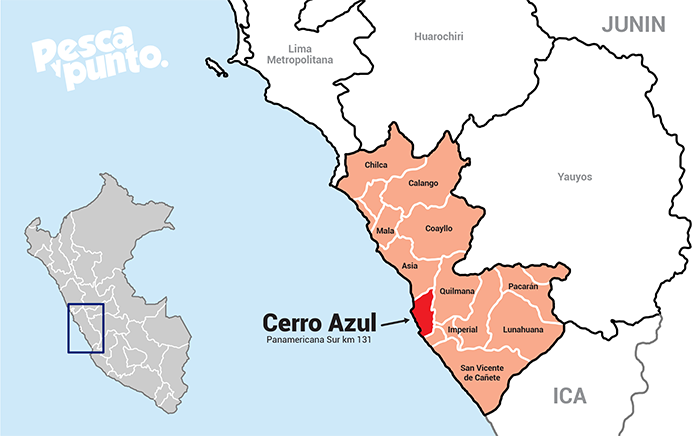
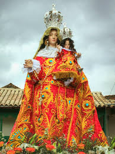
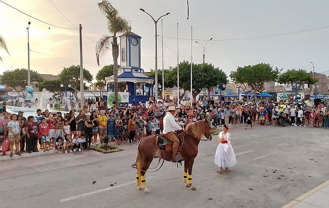
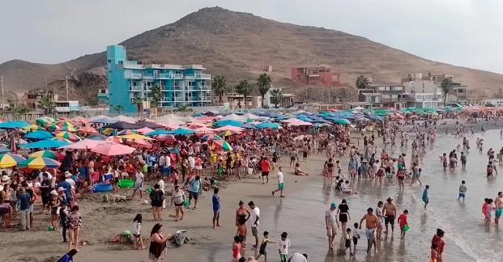

Introducción
Las festividades en Cerro Azul, Cañete, Perú, son eventos de gran relevancia para la comunidad local y para los turistas que visitan la zona. Este informe tiene como objetivo analizar y documentar las principales actividades festivas que se celebran en este lugar, buscando comprender su impacto en la sociedad, la cultura y la economía de la región.
Las festividades permiten que los habitantes mantengan vivas sus tradiciones, fortaleciendo la cohesión social y promoviendo el sentido de pertenencia a la comunidad. Además, las festividades son una vía para proyectar la identidad cultural de Cerro Azul a los turistas, quienes buscan experimentar las costumbres autóctonas, la gastronomía típica, la música y las danzas tradicionales.
Desde una perspectiva económica, las festividades de Cerro Azul representan una fuente significativa de ingresos. Atraen a turistas nacionales e internacionales, lo que contribuye al desarrollo del turismo local. Durante las festividades, el incremento de la demanda de servicios beneficia directamente a los empresarios locales y genera empleo temporal en diversas áreas.
Ubicación Geográfica
Cerro Azul es un pintoresco distrito ubicado en la provincia de Cañete, en la región Lima, Perú. Se encuentra a orillas del océano Pacífico, lo que le otorga un paisaje impresionante y un clima templado que atrae a turistas tanto nacionales como internacionales. Este distrito está situado aproximadamente a 150 kilómetros al sur de Lima, la capital del país.
Cerro Azul es conocido por sus hermosas playas, ideales para la pesca y el turismo de sol y playa. Además, su proximidad al mar le permite contar con una rica biodiversidad marina, lo que hace que sus paisajes naturales sean un atractivo adicional para quienes visitan la región.

Principales Actividades Festivas en Cerro Azul
Fiesta Patronal de la Virgen del Rosario
La Fiesta Patronal de la Virgen del Rosario es una de las festividades más relevantes para los habitantes de Cerro Azul. Celebrada generalmente el primer domingo de octubre, esta festividad religiosa y cultural honra a la Virgen del Rosario, patrona del distrito. La celebración comienza con una solemne misa en la iglesia local, seguida por una procesión que recorre las principales calles del pueblo. Durante estos días, el ambiente se llena de música tradicional, danzas folklóricas y ferias gastronómicas.

Festival del Mar
El Festival del Mar, que generalmente se celebra durante el mes de febrero, es otro de los eventos destacados de Cerro Azul. Este festival celebra la estrecha relación del pueblo con el mar. Incluye competencias de pesca, degustación de productos marinos, y presentaciones de música en vivo y danzas típicas de la región. Uno de los momentos más esperados es el concurso de platos tradicionales elaborados con mariscos, destacando la gastronomía de la zona.

Carnavales de Cerro Azul
Los Carnavales de Cerro Azul, celebrados en febrero, combinan celebraciones religiosas y festivas. Durante estos días, las calles se llenan de desfiles con carros alegóricos, música, bailes y el tradicional "juego de agua". Los colores vibrantes de los disfraces, la música popular y el ambiente festivo atraen a muchos visitantes.

Infraestructura y Recursos en las Festividades
Las festividades de Cerro Azul se celebran en diversos lugares emblemáticos del distrito, como la Plaza de Armas, la Iglesia de la Virgen del Rosario y las playas. Estos lugares brindan el espacio adecuado para acoger a los miles de visitantes que participan cada año.
La organización requiere una amplia gama de elementos logísticos como carpas, sistemas de sonido e iluminación, y recursos humanos. La seguridad es un factor crucial, y las empresas locales y patrocinadores también contribuyen con recursos materiales y financieros.
El apoyo institucional es fundamental, con la municipalidad de Cerro Azul jugando un rol clave en la planificación y financiamiento de estos eventos. Además, se cuenta con la colaboración de asociaciones de turismo y empresas privadas que promueven y patrocinan las festividades.
Participación Local
Los residentes participan en la organización de las actividades, la creación de decorados para los desfiles, y en la preparación de los platos típicos que se venden en las ferias gastronómicas. La participación es también notable en las actividades religiosas, como las misas y procesiones.
Turismo y Visitantes
Cerro Azul recibe una considerable cantidad de turistas durante sus festividades, especialmente durante la Fiesta Patronal de la Virgen del Rosario y el Festival del Mar. Estos eventos no solo atraen a personas de otras localidades cercanas, sino que también logran captar a turistas internacionales, especialmente aquellos interesados en el turismo religioso y gastronómico.
Colaboración Externa
A lo largo de los años, la organización de las festividades ha recibido apoyo tanto del gobierno regional de Lima como de empresas del sector privado, especialmente del área turística.